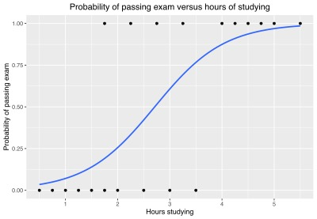
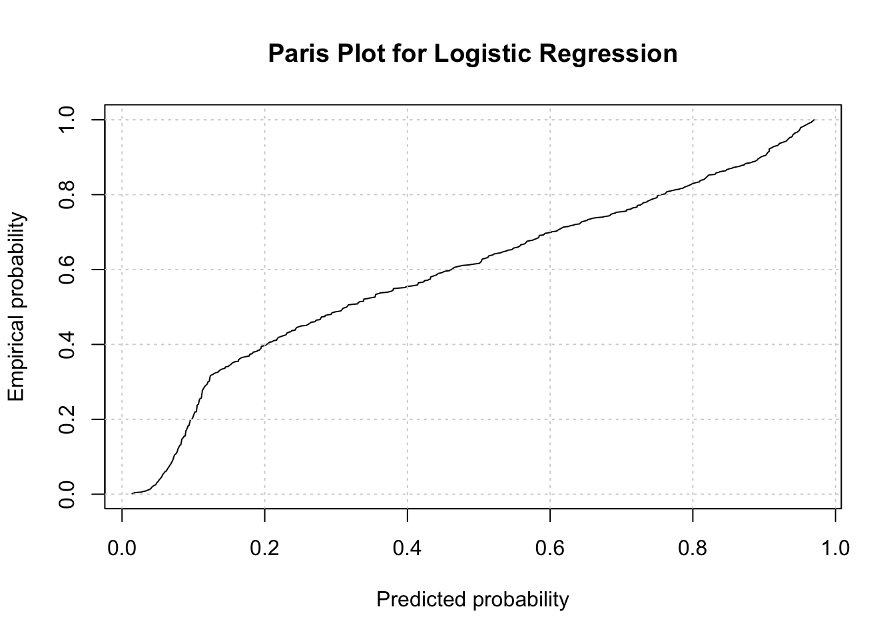
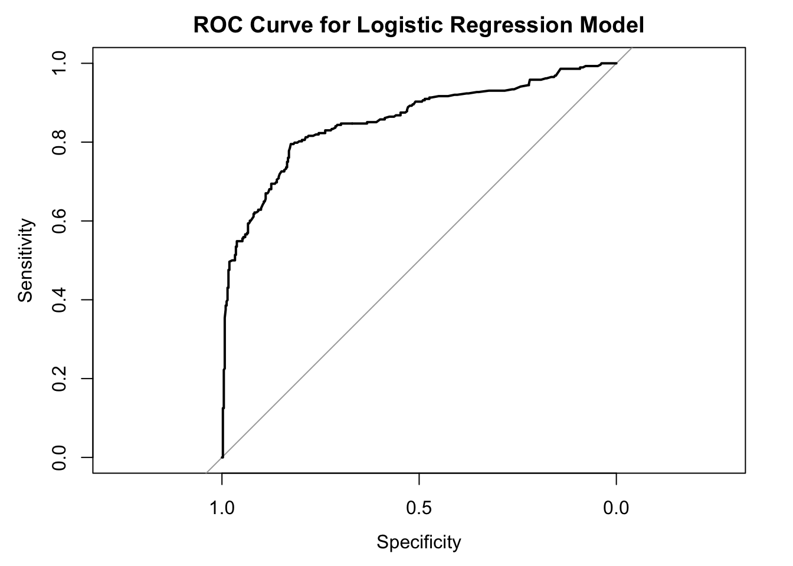

31 Generalized Linear Models for Binary Response
31.1 Generalized Liner models(binary) or Logistic Regression
A type of Generalized Linear Model (GLM) used to model binary outcomes.
Dependent Variable: Binary (e.g., 0 or 1).
Independent Variables: One or more predictor variables that can be continuous or categorical.
31.2 Purpose:
This regression models the relationship between a set of predictor variables and a binary response variable. Commonly used for classification problems where the outcome is categorical with two possible values (e.g., yes/no, success/failure).
31.3 Understanding the function
Logit Function: Links the linear combination of predictors to the probability of the outcome. The logit function is defined as:
\[ \text{logit}(p) := \log\left(\frac{p}{1 - p}\right). \]
So our regression equation is thus written as:
\[ \log\left(\frac{p}{1 - p}\right) = \beta_0 + \beta_1X_1 + \ldots + \beta_pX_p. \]
The probability of the outcome being 1 (success) is given by:
\[ p = \frac{1}{1 + \exp\left[-(\beta_0 + \beta_1X_1 + \ldots + \beta_pX_p)\right]}. \]
31.3.1 Interpret and Coefficients:
Intercept (\(\beta_0\)): The log-odds of the outcome when all predictors are zero.
Coefficients (\(\beta_i\)): The change in log-odds of the outcome for a one-unit increase in the predictor
31.3.2 Odds and Odds Ratio:
Odds: The ratio of the probability of the event occurring to the probability of it not occurring.
Odds Ratio: The ratio of the odds of the outcome occurring for different values of a predictor.
31.4 Assumptions:
Parameters are estimated using Maximum Likelihood Estimation (MLE). The goal is to find the values of the coefficients that maximize the likelihood of observing the given data. We assume that:
- Observations are independent: There is a linear relationship between the logit of the outcome and the predictors.
- No multicollinearity among the predictors. The sample size is sufficiently large.

31.5 Data Analysis
We will use the train.csv dataset from Kaggle’s: Machine Learning from Disaster competition.link
# Load the Titanic train dataset
titanic_train_data <- read_csv("../data/05_titanic_train.csv")Rows: 891 Columns: 12
── Column specification ────────────────────────────────────────────────────────
Delimiter: ","
chr (5): Name, Sex, Ticket, Cabin, Embarked
dbl (7): PassengerId, Survived, Pclass, Age, SibSp, Parch, Fare
ℹ Use `spec()` to retrieve the full column specification for this data.
ℹ Specify the column types or set `show_col_types = FALSE` to quiet this message.# Display the first few rows of the dataset
head(titanic_train_data)# A tibble: 6 × 12
PassengerId Survived Pclass Name Sex Age SibSp Parch Ticket Fare Cabin
<dbl> <dbl> <dbl> <chr> <chr> <dbl> <dbl> <dbl> <chr> <dbl> <chr>
1 1 0 3 Braund… male 22 1 0 A/5 2… 7.25 <NA>
2 2 1 1 Cuming… fema… 38 1 0 PC 17… 71.3 C85
3 3 1 3 Heikki… fema… 26 0 0 STON/… 7.92 <NA>
4 4 1 1 Futrel… fema… 35 1 0 113803 53.1 C123
5 5 0 3 Allen,… male 35 0 0 373450 8.05 <NA>
6 6 0 3 Moran,… male NA 0 0 330877 8.46 <NA>
# ℹ 1 more variable: Embarked <chr># Handle missing values by removing rows with NA values in 'Age' and 'Embarked' columns
titanic_train_data <-
titanic_train_data %>%
filter(!is.na(Age) & !is.na(Embarked))
# Convert necessary columns to factors
titanic_train_data$Pclass <- factor(titanic_train_data$Pclass)
titanic_train_data$Sex <- factor(titanic_train_data$Sex)
titanic_train_data$Embarked <- factor(titanic_train_data$Embarked)
titanic_train_data$Survived <- factor(titanic_train_data$Survived, levels = c(0, 1))31.5.1 Fit the Logistic Regression Model
Fit a logistic regression model using Survived as the response variable and Pclass, Age, Sex, and Embarked as predictors.
# Fit the logistic regression model
model <- glm(
Survived ~ Pclass + Age + Sex + Embarked,
data = titanic_train_data,
family = binomial
)
# Display the summary of the model
summary(model)
Call:
glm(formula = Survived ~ Pclass + Age + Sex + Embarked, family = binomial,
data = titanic_train_data)
Coefficients:
Estimate Std. Error z value Pr(>|z|)
(Intercept) 4.036825 0.430758 9.371 < 2e-16 ***
Pclass2 -1.144614 0.290678 -3.938 8.23e-05 ***
Pclass3 -2.409565 0.291179 -8.275 < 2e-16 ***
Age -0.036082 0.007715 -4.677 2.92e-06 ***
Sexmale -2.515793 0.209293 -12.020 < 2e-16 ***
EmbarkedQ -0.814190 0.567903 -1.434 0.1517
EmbarkedS -0.493651 0.266886 -1.850 0.0644 .
---
Signif. codes: 0 '***' 0.001 '**' 0.01 '*' 0.05 '.' 0.1 ' ' 1
(Dispersion parameter for binomial family taken to be 1)
Null deviance: 960.90 on 711 degrees of freedom
Residual deviance: 642.68 on 705 degrees of freedom
AIC: 656.68
Number of Fisher Scoring iterations: 5Model Summary Interpretation:
Intercept: The estimated intercept is 4.036825 with a standard error of 0.430758. This represents the log-odds of survival for a baseline group (first-class female passengers embarked from port ‘C’ with age = 0).
Pclass2: The coefficient is -1.144614 with a standard error of 0.290678. This indicates that being in the second class decreases the log-odds of survival by 1.144614 compared to being in the first class. The p-value (8.23e-05) is less than 0.05, indicating statistical significance.
Pclass3: The coefficient is -2.409565 with a standard error of 0.291179. This indicates that being in the third class decreases the log-odds of survival by 2.409565 compared to being in the first class. The p-value (< 2e-16) is very small, indicating strong statistical significance.
Age: The coefficient is -0.036082 with a standard error of 0.007715. This indicates that each additional year of age decreases the log-odds of survival by 0.036082. The p-value (2.92e-06) is less than 0.05, indicating statistical significance.
Sexmale: The coefficient is -2.515793 with a standard error of 0.209293. This indicates that being male decreases the log-odds of survival by 2.515793 compared to being female. The p-value (< 2e-16) is very small, indicating strong statistical significance.
EmbarkedQ: The coefficient is -0.814190 with a standard error of 0.567903. This indicates that embarking from port ‘Q’ decreases the log-odds of survival by 0.814190 compared to embarking from port ‘C’. The p-value (0.1517) is greater than 0.05, indicating that this effect is not statistically significant.
EmbarkedS: The coefficient is -0.493651 with a standard error of 0.266886. This indicates that embarking from port ‘S’ decreases the log-odds of survival by 0.493651 compared to embarking from port ‘C’. The p-value (0.0644) is slightly greater than 0.05, indicating marginal significance.
*Pclass, Age, and Sex are statistically significant in predicting survival.
We perform the Paris Plot to shows the relationship between the predicted probabilities and the empirical probabilities.
# Predict probabilities
predicted_probs <- predict(model, type = "response")
# Create the Paris plot
empirical_probs <- ecdf(predicted_probs)
sorted_probs <- sort(predicted_probs)
plot(sorted_probs, empirical_probs(sorted_probs), type = "l",
xlab = "Predicted probability", ylab = "Empirical probability",
main = "Paris Plot for Logistic Regression")
grid()
The Paris plot shows that the logistic regression model is generally effective in predicting survival on the Titanic dataset. The predicted probabilities closely follow the empirical probabilities, especially at the extremes (very low and very high predicted probabilities).
There may be some room for improvement in the middle range of predicted probabilities, where the line is not as steep. This could indicate that the model might benefit from additional predictors or different modeling techniques to improve accuracy.
31.5.2 Evaluate the model performance
We can visualize the ROC curve and calculate the AUC to evaluate the model’s performance.
# Compute the ROC curve
roc_curve <- roc(titanic_train_data$Survived, predict(model, type = "response"))Setting levels: control = 0, case = 1Setting direction: controls < cases# Plot the ROC curve
plot(roc_curve, main = "ROC Curve for Logistic Regression Model")
# Calculate AUC
auc(roc_curve)Area under the curve: 0.8544The ROC curve is well above the diagonal line and closer to the top-left corner, indicating that the model has good discriminatory power. This means the model is effective in distinguishing between survivors and non-survivors.
An AUC of 0.8544 falls within the “excellent” range. This means this logistic regression model has a high ability to distinguish between survivors and non-survivors on the Titanic dataset. >AUC Value Range:
AUC value: AUC ranges from 0.5 to 1.0.
value of 0.5 indicating that the test is no better than chance at distinguishing between diseased and nondiseased individuals.
A value of 1.0 indicates perfect discrimination.
AUC values above 0.80 are generally consideredclinically useful.
AUC values below 0.80 are considered of limited clinical utility.
When interpreting AUC values, it is important to consider the 95% confidence interval. The confidence interval reflects the uncertainty around the AUC value.A narrow confidence interval indicates that the AUC value is likely accurate, while a wide confidence interval indicates that the AUC value is less reliable.Çorbacıoğlu ŞK,etc. 2023